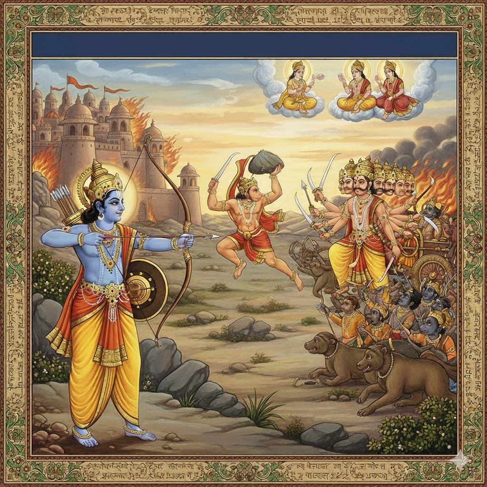
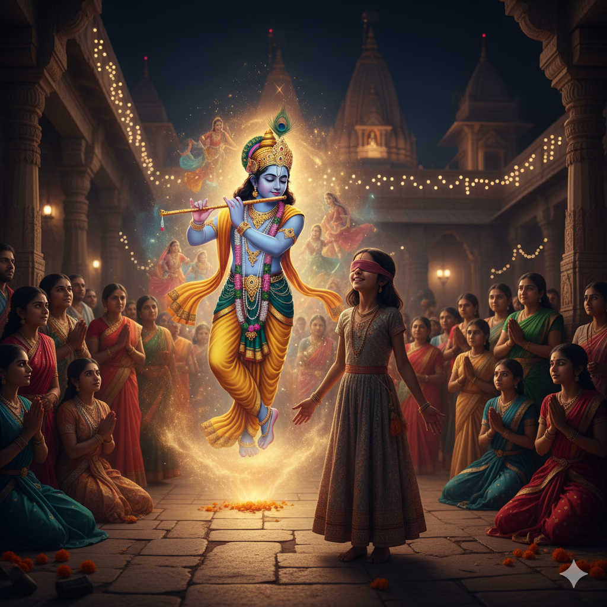
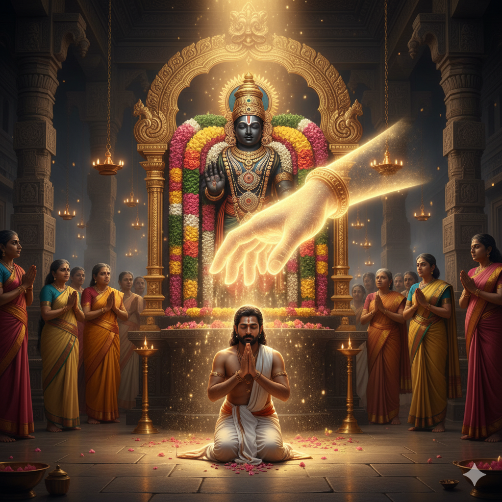
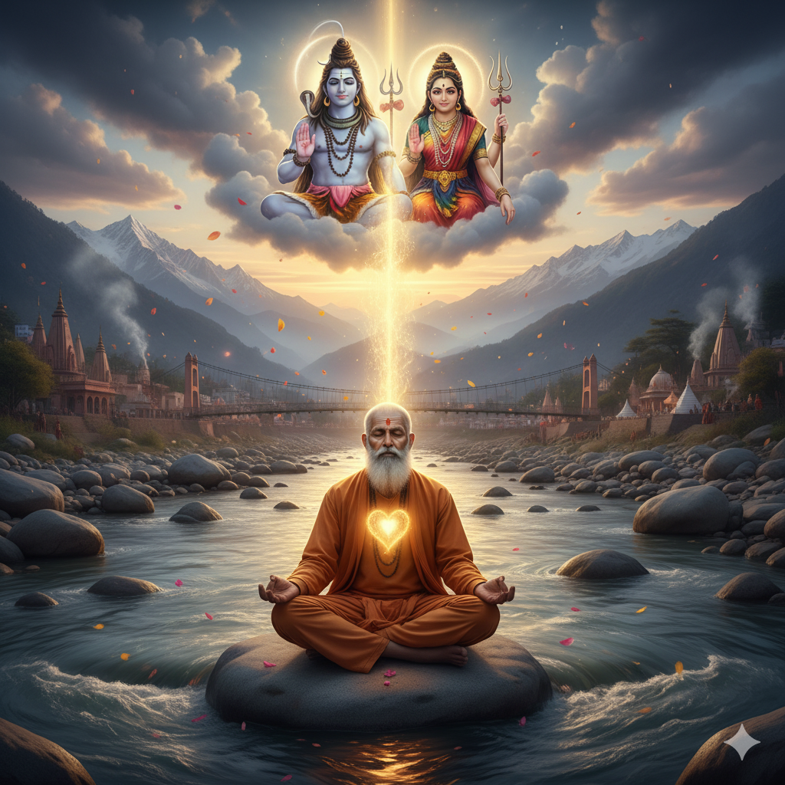

7 Kandas • 24,000 VersesThe Ramayana
Follow the journey of Lord Rama, Sita, and Lakshman. Discover how truth, duty, humility, and devotion triumph over ego and arrogance.
Explore Epic →When Kurukshetra is inside your own mind, the Bhagavad Gita speaks to your heart. Explore sacred scriptures, divine audio stories, and daily reflection habits built for peace, clarity, and purpose.
“You have a right to your sacred duty, but never to the fruits of your actions. Perform your work with total devotion, free from anxiety of the outcome.”
Search characters, life dilemmas, sacred parvas, or philosophical inquiries across our knowledge base.
Bring whatever weighs upon your spirit today. Select an emotion or type your life dilemma to receive Krishna’s direct counsel to Arjuna.
“You have a right only to work, never to its fruits. Let not the fruit of action be your motive, nor let your attachment be to inaction.”
Shift your entire mental energy from the outcome to the sacred act in front of you. Anxiety is simply future projection. Complete your present responsibility with complete heart, and surrender the final result to the cosmos.
Build a daily habit of quiet contemplation. Track your reflection streaks, bookmark verses that touched your soul, and monitor your reading journey across sacred epics.
Sanatan Dharma is not dogma; it is an eternal compass guiding righteous duty, conscious action, and soul liberation. Select a pillar to reflect upon its essence.
Dharma is the universal principle of righteousness, duty, and harmony that sustains the cosmos. Living in Dharma means aligning thought, word, and action with moral integrity, compassion, and universal well-being.
Immerse yourself in chapter-by-chapter breakdowns of humanity's greatest spiritual narratives.

7 Kandas • 24,000 VersesFollow the journey of Lord Rama, Sita, and Lakshman. Discover how truth, duty, humility, and devotion triumph over ego and arrogance.
Explore Epic →The grand epic of Kurukshetra exploring righteous statecraft, complex human bonds, loyalty, and the ultimate victory of cosmic order.
Explore 18 Parvas →
18 Chapters • 700 VersesLord Krishna's timeless battlefield counseling to Arjuna, illuminating Karma Yoga, Bhakti Yoga, and Jnana Yoga for modern living.
Explore Teachings →A daily timeless Sanskrit verse paired with a practical reflection prompt for peace, focus, and conscious action.
“You have a sacred right to perform your duty, but you are not entitled to the fruits of action. Never let anxiety for results paralyze you, and never surrender to inaction.”
When the worldly mind wanders into anxiety or hurriedness, take 4 deep, conscious breaths to return to the eternal present.
Experience the spiritual energy centers of Bharat. Click any holy dham to enter virtual darshan and stream temple chanting.
The primordial seat of Lord Shiva amidst glacial Himalayan peaks, where eternal stillness purifies the soul.
The oldest living city on Earth, bathed in the eternal golden light of the celestial Ganga Aarti and cosmic liberation.
The supreme abode of Lord Srinivasa where unuttered prayers receive infinite grace and boundless love.
The sacred submerged capital of Bhagavan Krishna, radiating divine sovereignty, ocean serenity, and moral dharma.
Inspirational stories of unwavering devotion, historical miracles, and spiritual realization with audio recitals.
When Lakshman fell on the battlefield of Lanka, Hanuman lifted the entire Himalayan mountain to deliver the life-saving Sanjeevani herb.

How a humble, unlettered devotee’s unuttered heart prayer received an extraordinary divine response at the sacred shrine of Venkateswara.

A seeker meets an illuminated sadhu along the Himalayan riverbank and learns the profound truth of unconditional surrender and inner peace.
A digital sanctuary crafted for every seeker to explore sacred scriptures, listen to narrated audio stories, and cultivate a quiet daily reflection habit.
Earn Karma XP, track reflection streaks, and collect sacred verses across the Upanishads and Gita.